巴曙松教授主持、孙东宁博士主讲：量化投资与当前市场
编者语：
2016年量化基金的整体表现亮眼，平均收益开始跻身基金行业上游，展现出量化投资的独特优势。中国量化投资如何一步步崛起？2017年，量化投资面对新的市场形势又将面对那些挑战？本文的主题是中国的市场和量化投资，以公募基金公司的视角进行讨论。第一部分中国量化投资的崛起；第二部分介绍当前量化投资面临的挑战；第三部分介绍主观+量化的量化投资方法论；第四部分介绍当前的市场形势。本工作笔记是由巴曙松教授发起的“连线华尔街”第117期内部会议纪要，不代表任何机构的意见和看法。本期报告由巴曙松教授和牛播坤博士共同整理，仅供内部参阅，请勿对外提供，未经书面同意，不得以任何形式摘录和发表。本纪要未经主讲嘉宾本人审阅。敬请阅读。
主持/巴曙松；主讲/孙东宁（平安大华基金量化投资总监、衍生品投资执行总经理）
主讲人简介：
孙东宁，平安大华基金量化投资总监、衍生品投资执行总经理。北京大学力学系硕士，美国哥伦比亚大学博士，约翰霍普金斯大学博士后。 量化投资俱乐部理事, 清华大学深圳研究生院课程教授、量化投资中心行业导师，全美华人金融协会（TCFA）理事（2013-2015）。10多年的美国量化投资经验，先后任职于瑞士再保险自营交易部(高级研究员), 花旗集团投资银行(高级副总 裁), 瑞士银行投资银行(总监), 德意志银行投资银行（执行总监）, 专业涵盖利率/信贷/按揭/股票及其衍生品的量化投资、对冲与套利。 2014 年 11 月加盟平安大华基金， 负责量化投资、衍生品投资和跨境投资业务。
一.量化投资的崛起
量化投资包含的范围很广： 第一类策略是期货CTA策略，包括趋势跟踪策略和跨品种、跨期的套利策略，但 CTA 策略容纳的资金量有限，在公募基金量化投资中不是一种主流策略。第二类策略是各种套利策略，比如 ETF 套利和分级套利等，其原理是利用不同投资工具之间的价格差异，获得无风险或者低风险的收益。在当前市场波动比较小的情况下，套利机会比较少，使用这种策略会造成基金空置、利用效率不高的问题。同时，套利策略对系统要求比较高，通常具有程序化自动交易接口的机构才可以有效地捕捉到套利机会。对于公募基金，套利策略目前也不是一个主流的策略方向。第三类是日内的高频交易。2017年上半年在国内股指期货受限、量化对冲策略难以开展的背景下，一些私募基金公司利用股票的日内回转交易来做绝对收益产品。受到流动性的限制，使用这类策略的基金通常规模不大。公募基金公司由于对从事反向交易规则的合规限制，难以开展这种策略。第四类是股票的Alpha策略。公募基金量化团队通常面临管理大规模资金的任务，面对的是非复杂的大众投资者，因此合规要求和风控都比较严格，交易费用也比较高（私募单边交易费用是 0.08‰-0.2‰，而公募基金的单边交易费用达到 1‰），不适合做高频策略。所以，从公募基金的角度来看，更加侧重于低频的股票阿尔法策略。今天主要介绍 A 股市场的量化投资构架和目前量化市场的情况。
图 1 是上证综指近 10 年来的走势图， 图 2 是上证综指近 2-3 年的走势图。明显看出中国 A 股市场第一个特点是牛短熊长，大部分时间处于下跌趋势中；第二个特点是大起大落，在 2007-2008 时间段里有巨大的涨跌波动，最近的一波行情从 2014 年起步， 2015 年 6 月达到 5200 点的顶点，之后迅速崩盘到 2800 点左右。在 2016 年实行熔断制度的一个月时间里， 上证综指下跌了 23%，之后进入震荡小幅上升的阶段。在一个牛短熊长、 大起大落的市场上，如果简单地跟踪指数做投资， 过去 10 年沪深 300 指数的年化收益率只有 3.9%。
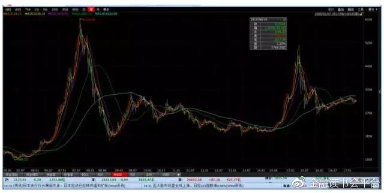 图 1： 上证综指 10 年走势图
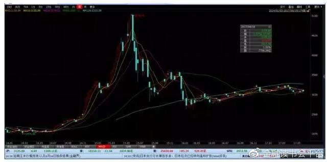图 2： 上证综指 2014 年至今走势图
在这样一个牛短熊长的市场上，量化基金仍然获得了比较好的长期收益。图3 统计了2014年1月1日前成立的基金在 2007 年1月1日-2016年8月31日期间的收益情况。这张表统计了标准股票型和偏股型的基金收益率，总基金量是438支，其中量化基金大约是 53 支，占比 12%， 而收益率排名前 20 名基金中量化基金有 6 支，占比 30%，远远高于量化基金在所有基金中的占比。 有几只量化基金获得了今年 4 月份颁布的 3 年期和 5 年期基金“金牛奖” 。所以，假以时日，量化基金在长跑中获得了良好的收益。
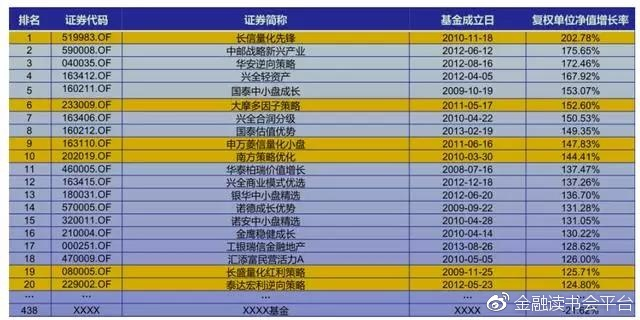图 3：主动量化基金的长期表现
根据我们自己的统计，量化基金每年的发行量大约在10支以上。2015年由于股票牛市的原因，量化基金的发行数量和规模大大增加到 39 支，平均每支发行规模达到16亿，总量大概在600多亿。2016年进入股灾阶段，但量化基金的发行数量仍然达到 44 支，一方面是由于当时已经报备的产品到期需要发行，另一方面在 2016 年整体股市表现不佳的情况下， 有几只量化基金表现非常亮眼，年化收益达到 20%-30%的水平，尤其是熔断之后，表现非常亮眼，吸引了市场的注意，也树立了量化基金的名声。2017 年一季度结束，量化基金的发行数量已经达到16支，保持这样的发行速度，2017年可能又是量化基金发行的一个大年。
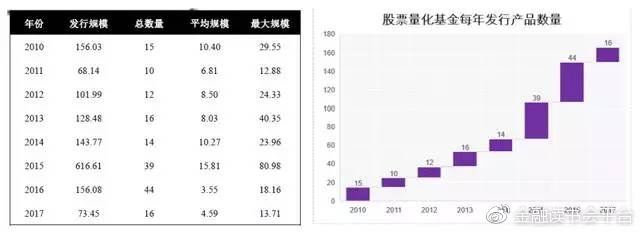图 4 量化基金发行规模和发行数量
截至 2017 年一季度，股票量化基金总量达到 186 支，股票量化基金按照不同投资类型进行统计， 其中被动指数基金和指数增强基金占 30%；主动型股票量化基金（包括普通股票型，偏股混合型和灵活配置型）总量达到了 60%； 股票多空产品占比 10%。股票多空型量化基金在 2014 年和 2015 年有显著的数量上的增长，但是在 2015 年 9 月 2 日中金所新规之后，目前发行已经基本停滞，原因是新规规定投机账户单个品种每日开仓交易量不能超过 10 手，而且日内开新仓的交易费用由原来的 20 多元/手涨至 2000 多元/手, 造成整个市场投机盘非常不活跃， 交易量比原来下降了 99%，失去流动性。在单向的套保需求下，股指期货不再能够反映股指的一个真实水平，而是远远低于股指的真实水平。如果采用选股并用股指期货对冲的策略，就要承受股指期货的高贴水损失，最严重的时候，中证 500 期指贴水幅度按年化概念计算曾达到 50%-60%，使得股票多空型策略无法开展。股票多空型是获得稳定的绝对收益的一种非常好的投资方式，期望未来股指期货的政策放开后，这种策略会得到一个更有利的发展。
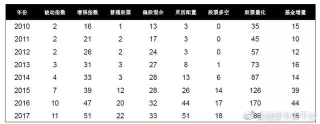图 5： 股票量化投资基金不同投资类型的累计数量情况
在2015年牛市时期，中国市场股票量化基金总量达到2000亿规模，此后在股市崩盘尤其经历熔断后，总量下跌40%至1200 亿左右。在 2016 年下半年，由于一些量化基金表现良好，市场关注，量化基金的规模加速上升。 截至 2017年一季度，各类公募基金的总量达到 9.4 万亿，股票类基金 2.8 万亿，股票量化基金 1600 亿，占基金总量的 1.7%， 占所有股票基金总量的 5.7%，在中国市场上量化基金占比极低。这个低占比是个双刃剑，一方面量化投资在中国的投资体系中还不是主体，另一方面目前总量较小，策略同质化、拥挤化现象有所显现但还不是很严重。
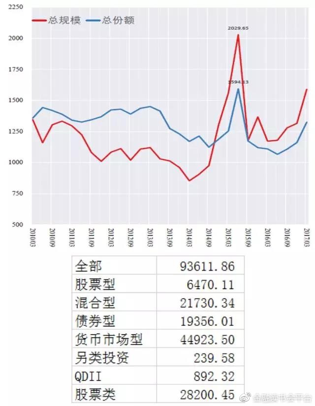图 6：股票量化基金的管理资金规模和份额
2017年上半年，上证综指上涨了 2.7%，大盘指数上证50和上证300上涨了10%和11%。中盘和小盘指数下跌，中证 500 下跌了 2.3%，中证 1000 下跌了 12%。图 7 列示了收益率前22名的量化投资基金，收益率在 13%-20%之间，总体来说今年量化公募基金交出了一份比较令人满意的答卷。上半年量化公募基金也出现了问题，后面会提到并给出分析。
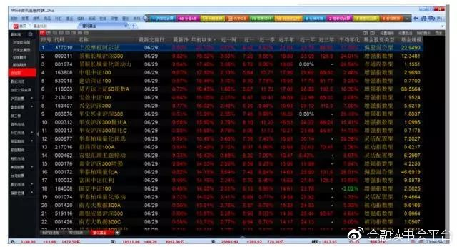图 7： 2017 年上半年量化投资基金收益率
为什么量化投资在中国市场是有效的？ 这涉及到一个市场有效性的问题。Fama 和 Hansen 认为股票市场是一个有效的市场，股票的价格充分反应了它所包含的市场信息。如果市场是充分有效的，从长期来看获得超额收益是不可能的，在有效的市场下最有效的投资策略是购买指数基金或者指数 ETF 来获取市场收益。Shiller 从行为金融学的角度认为由于市场上投资者的贪婪恐惧、羊群效应等各种非理性行为，导致市场异象，价格不能完全反映所有的信息。在一个非完全有效的市场上，可以通过挖掘市场规律制定有效的策略，从而获得高于市场收益（即获取超额收益）。究竟哪种观点正确， 三位学者同时获得了2013年诺贝尔经济学奖，表明这个问题是没有标准答案的。能否在市场上获得超额收益与市场的投资者结构有很大的关系。在一些发达的市场，例如美国，由于投资者的主体是机构投资者，从长期来看获得较高的超额收益非常困难。中国股票市场投资者结构有所不同，散户投资者占有的股票市值约占整个市场的25%，其交易额达到了所有股票交易额的85%，即散户的短期交易行为在中国市场上占有很重要的主导地位。散户是受贪婪、恐惧和羊群效应等非理性行为影响较大的投资者，造成中国市场在股票价格上存在大量市场异象，从而可以有效的利用市场异象发掘规律，制定策略，进而获得较高的超额收益。
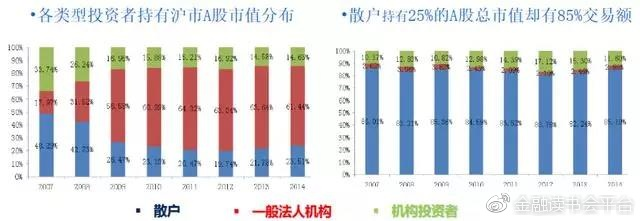图 8：中国股市的投资者结构（数据来源： 券商报告）
中国股市正在发生着显著的变化。过去由于制度不健全，获得不对称信息的比较优势是一种有效的获利手段。现在，获得信息的渠道越来越多，市场信息量越来越大，如何去伪存真，辨别有用的信息变得非常重要；同时中国市场金融监管加强，对内幕交易、操纵市场行为打击力度也越来越大，使得获得所有信息的难度和风险大大提高。
在目前中国市场状况下，更重要的是如何利用人的投资经验和电脑强大的计算能力，从海量的数据中发掘出规律，进而制定有效的投资策略，把策略变成一系列明晰的投资规则（即所谓模型化），并由计算机自动化、有纪律地执行，这是量化投资方法。这里需要澄清一个概念上的误区，仅仅直觉地存在于头脑中、不是清晰确定地写出明晰的规则、不能交由计算机实现和自动执行的“模型”，不是真正意义上的模型， 这种投资方法不是真正意义上的量化投资。
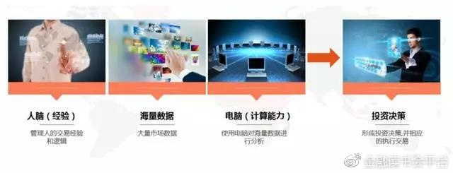图 9：量化投资方法
量化投资的目标是获取超额收益。股票收益来源分为两部分，第一部分为市场收益，称之为β； 第二部分是个股的超额收益，称之为α。中国市场由于具有牛短熊长、大起大落的特征，以沪深 300 为例，其10年年化收益为3.9%，因此如果要想获得更高的收益，就要在个股的超额收益上下功夫。
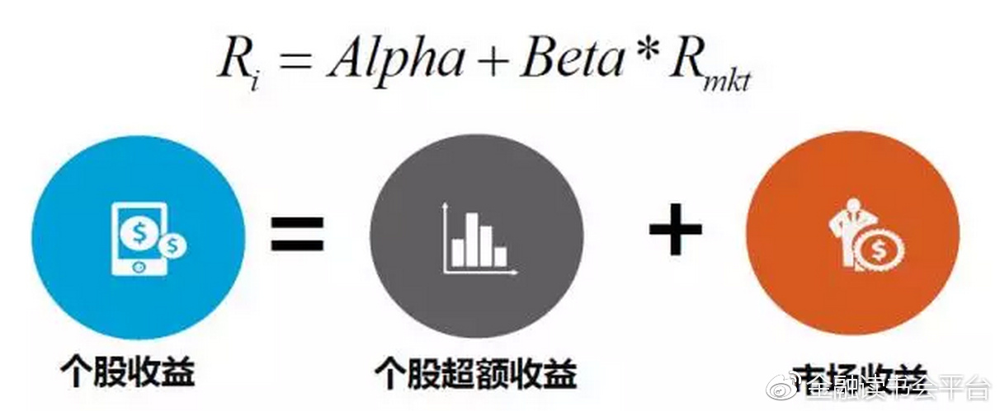图 10： 量化投资方法： 收益角度
超额收益的来源通常分为几个维度，最典型的是价值维度、成长维度和量价（交易）维度。价值维度是最传统、最经久不衰，也是最不可少的一种投资手段，从市净率、市盈率、毛利率和经营现金流与总资产的比等价值投资因子中发掘股票投资收益的贡献，价值维度带来的收益来源于市场对于优质股票认知不足或者错杀所产生的定价错误，或者行业轮动所产生的投资价值。价值维度投资的持仓比较稳定，通常通过持有优质公司的股票来获取长期的超额收益。成长维度从上市公司的年收入增长率、净资产增长率等因子去发掘优质股票。高成长的公司的盈利成长较快，对市场投资者的吸引力很大，价格也非常具有想象力。中国市场上存在显著的追涨杀跌的从众现象等众多市场异象，从量价（交易）的维度上去挖掘可以获得比较高的超额收益。一个常见的交易维度因子是发掘市场动量变化和反转，即一个股票在一段时间内获得比较大的上涨的情况下，下一段时间股票价格走势。交易维度还可以研究一只股票刨去市场收益和行业收益后自身的收益特点和波动性等。
目前量化投资参与者在逐步增加，策略同质化现象也越来越严重，要想获得长期的较好的收益，如何在已有的维度上深挖有效的超额收益因子，如何扩展数据源获得独特的超额收益因子（例如高频数据维度、事件维度、大数据维度、公司治理维度等等），是每个量化投资团队获得长期比较优势的方向。
提到量化投资，大家常想到的特点是 1）历史依赖性， 即通过对历史数据进行挖掘回测，来找到规律； 2） 纪律性， 即制订规则后由电脑自动执行，回避人的主观情绪干扰。但同时，完整的量化投资思想中还有一个非常重要和关键、却常常被人所忽视的特点：量化的风险分解和基于风险分解后的精细的风险控制是量化投资不同于传统主动投资的最主要特点！ 无论是在美国的发达衍生品投资还是在国内的 A 股市场投资，风险分解和基于风险分解的风险控制， 是贯穿于整个量化投资中的。
对于股票量化投资讲，可以把个股的风险分为两部分，第一部分即个股的特定风险，第二部分为系统风险。系统风险又可以具体的分为行业风险和风格风险，风格风险即常见的市值风险、估值风险、波动的风险，以及在净资产回报率上的风险暴露等等。对于一篮子股票，可以通过量化的风险分解的方式，对每一股票的风险进行详细的分解，而后将每一股票在一揽子中所占的资金权重，与其风险进行加权，便可以清晰地计算出这一篮子股票在个股风险上、各个行业上、各个风格上的集总的风险暴露。 对于一个指数，比如沪深 300 指数，可以进行同样的分解和风险加总。 而后将一篮子股票的风险和指数标的的风险进行比较，就可以知道一揽子股票相对于指数来说在每一行业、每一风格上的风险有多大，是超越指数、低于指数，还是保持指数中性。反过来， 在量化投资的过程中， 如果对于未来市场上各种风格风险和行业风险有较为清晰的想法和判断，可以通过调整一篮子股票中每只股票的资金权重， 实现一篮子股票在行业和风格风险暴露上的超低配， 即通过风险暴露来表达市场观点。例如判断目前是一个大盘股的市场，希望在一揽子股票风险中在大市值上实现超越大盘的风险暴露，则可以通过数学方法计算每一支股票的权重，最后达到相对指数正向的暴露。
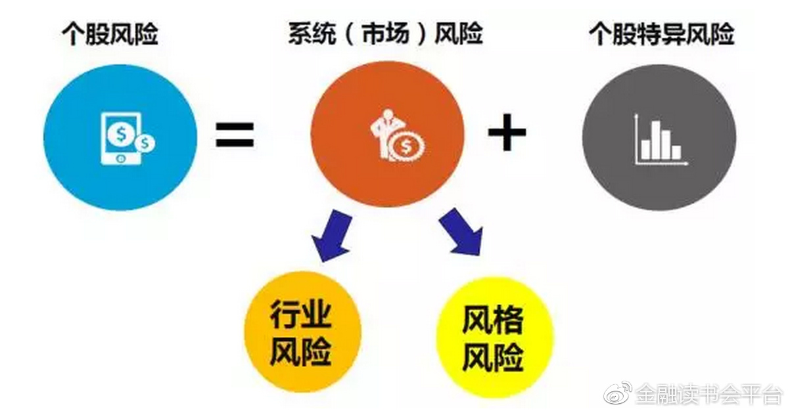图 11：量化投资方法：风险角度
严格意义上的量化投资不是零打碎敲式的投资方法，而是一种系统性的投资方法。以我主导建立的平安大华量化投资平台为例，简要介绍量化投资流程。
首先要有非常好数据源，建立数据库，包括财务因子数据库、交易行业数据库等等。在数据库的基础上进行分析和挖掘，找出中国市场上非常有效的因子，以获取超额收益；然后通过因子的合理组合来进行股票的选择，形成选股的阿尔法模型；下一步通过风险模型和优化来控制股票组合在各个风险上的暴露，表达市场观点，形成最终的持仓。对于形成的持仓，要通过组合交易的成本模型，计算交易成本和对市场的冲击和滑点，进行仿真回测和绩效归因。最后在回测确认策略有效的前提下， 将该策略用模型自动化产生交易清单，交给交易系统去执行。
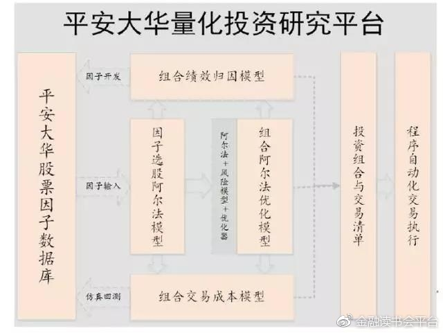图 12： 系统化的股票量化投资过程
我非常认同量化投资三重境界的说法。第一重境界是以量化为辅助研究工具，投资仍然做大量的主观选股，例如通过 WIND 终端，在 EXCEL 中透过几个指标进行选股。这个层面还是主观投资的范畴，不是严格意义上的量化投资。第二重境界是从数据库的建立、到因子挖掘、Alpha 选股策略形成、到风险分解与控制、到模拟交易与业绩归因、到仓当生成与自动交易，形成系统化的投资方式，这是严格意义上的量化投资；第三重境界是在系统化量化投资基础上，对市场各方面情况具有深入的了解，充分有效地应对各种各样的市场条件和市场变化，这是量化投资的最高境界。
我们一个实例来看这种系统化量化投资的效果。图13是一只深圳 300 指数增强基金（代码 700002）相对指数基准的超额收益。这是一只公募指数增强基金，合同要求必须将 80%的资金放在深圳 300 成分股上，占比不少于 5%的现金以应对申赎，至多不超过 15%的资金放在非深圳 300 成份股上，并有对指数跟踪误差的限制。可以看到，该量化基金超额收益绝大多数时间里属于上升趋势，且比较平稳；其超额收益在 2016 年有显著的增长，此后进入比较平坦的阶段，可以看出在市场波动较小且获得较好的超额收益情况下采取了比较稳健的操作方式。从 2016 年年底到 2017 年 4 月初，整个市场风格发生变化，许多基金的超额收益在业绩上出现了显著的回撤，但是该量化基金超额收益继续向上增长，原因是在实际操作中对风险进行了严格的把控，在市值因子上既不偏大盘也不偏小盘，从而在市场上大小盘风格发生转变的时候没有因为错误选边而发生明显的超额收益回测。在 2017 年 4 月之后，该量化基金超额收益出现回撤，实际上是在这段期间市场总体风格发生更加明显的改变，使得一系列超额收益因子变得失效，这一点在下文中会有进一步的分析。 经过分析归因和对市场的深入分析和认知，重新调整了策略，超额收益止跌回升。
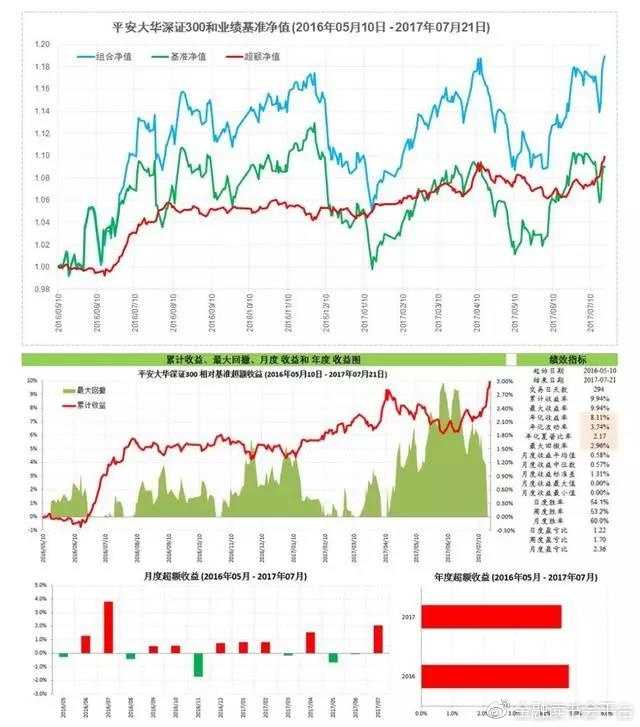图 13： 深圳 300 指数增强历史业绩
二.量化投资面临的挑战
2017 年市场风格发生了显著变化。这导致了一批量化基金，其中包括一些 2016 年表现的量化基金， 业绩出现了显著回撤。2017 年量化投资面临的第一个挑战便是小市值因子的失效，在 2009 年市值因子对净值的贡献是上下波动的， 基本上是一个风险因子。但是 2009 年以来，形成长达七年的单向变动，是形成超额收益的因子。 在 2014 年底-2015 年年初，风格有过短暂的改变，当时市场由偏向小盘股变为大盘股，但是持续一个半月到两个月的时间，市场又变为偏向小市值的风格。 在 2016 年底和 2017 年 3 份以来，市值因子方向发生扭转，由偏向小市值变为偏向大市值。
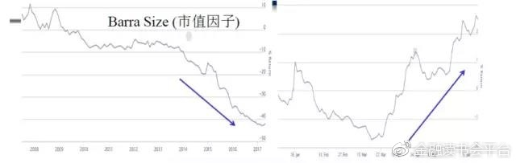图 14： 市值因子对净值的贡献（图表来源： Barra）
大中小盘指数在 2016 年走势基本相同， 但小盘股波动大于大盘股；在 2017年之后， 指数走势发生显著的偏离，超大盘和大盘指数获得了正的收益，中盘和小盘指数则明显下跌。
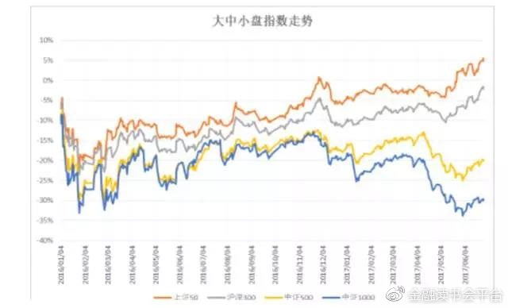图 15：大中小盘指数走势
第二个挑战是中国市场的动量因子发生了扭转。2014年以来，动量因子是一个反转因子，即如果持有的股票出现显著上涨将其卖出，如果出现下跌将其买进持有，会带来非常好的超额收益。但从今年 3 月份以来，发生了显著的反转，即强者恒强，弱者恒弱。
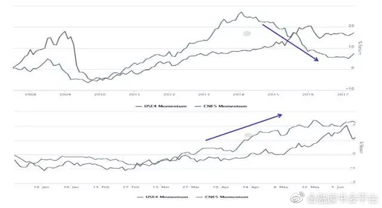图 16： 动量因子的效果发生扭转（图表来源： Barra）
第三个挑战价值因子在崛起，在今年上半年获得良好的投资收益。图 17 中红线是市盈率的倒数，绿线是市净率的倒数， 从历史数据来看，两个价值因子长时间内价值因子在中国不是超额收益因子。但在 2014 年以后二者表现出了明显的超额收益，在 2017 年之后更加明显。 如果在 2017 年上半年关注价值因子，不仅要关注市净率低的股票，也要关注市盈率低的股票，才可以获得非常好的收益。今年上半年跑得好的是家电和消费类的白马龙头，如茅台、美的、格力。
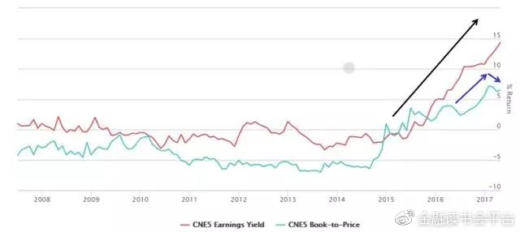图 17： 价值因子的崛起（图表来源： Barra）
随着量化投资的增多，量化投资的因子拥挤现象开始出现。例如，天地源股票 2016 年年底信息披露中显示前十大股东有四个是量化投资基金，原因是该股票低市净率、低市盈率，同时又具有小市值的特性，当时是大量量化投资基金选股的热门。选股策略同质化，因子拥挤的结果是同买同卖，同向推动股票价格涨跌，加剧市场的波动，难以获得超额收益。 在市场拥挤的情况下，想要获得超额收益，就要从数据源的广度和深度上不断挖掘，找到有效的因子，保持比较优势， 进而获得超额收益。在在中国市场上，量化基金目前还不是一种主流的投资方式，因子拥挤的现象开始出现，但还不是特别严重。另外，上半年交易清淡，二季度很长时间沪深日成交量在 4000 亿上下，指数波动率下降，换手率下降，炒作减少，错误定价的机会减少，加大了获取超额收益的难度。
再有一个挑战是今年上半年市场呈现出显著的一九行情。一方面是价值股的“漂亮50”表现靓丽，另一方面是“要你命 3000”的市场下跌，使得量化投资的分散投资以降低个股风险的原则受到挑战。较大的分散持仓会加大选到下跌股票的概率。
以上市场趋势会不会持续，还是很快会回归小盘股优势？我们对上半年市场风格发生转变的主要原因进行了分析：一是 IPO加速，股票的壳价值降低，而新股多数是小市值股票，在中国市场上长期以来小盘股的超额收益现象在上半年遭到了稀释；跨行业的并购政策收紧，外延式的扩张受到抑制，都是对小盘股收益的不利因素。二是监管加强，概念炒作在上半年开始减弱。三是散户交易为主的市场也有所转变，今年成交增量来源的主体是所谓的国家队、机构打新基金、绝对收益的专户或私募、QFII等机构资金，以及中国的股票加入 MSCI新兴市场指数也带来的一些外部机构的部分资金增量，这些机构投资者持仓时间较长，与散户的短期性的交易行为有着很大的差别；四是公募基金打新对大市值、低波动的价值股的青睐。打新基金要求在深市和沪市的每个市场上有 6000万以上的股票底仓， 因此需要在底仓的股票上获得较好的收益，或者至少是保持底仓净值非常稳定，不能因为底仓净值的剧烈下滑抹杀了打新的收益。公募基金打新现象造成今年上半年市场整体偏好有良好基本面的、并具有一定成长性的价值股。综合来看，上述环境当前没有发生显著的改变， 所以我个人的市场观点是今年以来的市场新趋势在未来一段时间内还会持续。
三.关于量化投资的方法论：主观+量化
关于量化投资应该完全不受主观影响，还是应该是一种主观+量化的投资方式， 这个话题一直在量化投资界有着不同的观点。我个人倾向于后者，即量化投资应该是与主观投资相结合的一种投资模式。量化投资是一种非常有纪律性的投资， 但主观+量化的投资方式与量化投资的纪律性并不矛盾。量化策略一旦形成，在日常操作中应尽量利用计算机自动化的模型进行执行，避免人对于模型的干扰，回避人的主观贪婪恐惧等情绪对投资的干扰，回避无效的追涨杀跌，这是量化投资的基本原则。 但在单纯的量化投资存在很多盲点： 首先， 市场风格切换时， 历史规律不再成立。 所有的量化策略都是基于历史规律形成的， 模型在很多情况下有效，但在面临市场突然切换的情况下，历史的规律不再成立，如果一味坚持原来的投资策略，可能会带来严重的后果。 在美国曾经非常流行的一种投资策略， 信用违约互换（CDS） 和信用债之间的套利策略， 就是一个典型的例子。 信用债的风险通常包含两部分，一部分是利率风险，可以通过利率曲线来刻画，另一个是违约风险，可以通过 CDS 曲线先刻画。 结合两重风险， 可以通过量化的手段对一只信用债券进行理论价格的计算， 与市场上实际价格进行比较， 而理论价格和实际价格的价差，可以通过对利率曲线做一个扰动来弥补。 这个扰动本身就可以作为市场信号。 在绝大多数时间里，这个扰动在很窄的范围内波动， 当它偏离正常范围的时候， 就可以通过买卖 CDS 和信用债券年市场发生了什么事情， 采取应对方式， 可以减少或避免上述损失。 前面提到的扰动项的金融含义实际上是 CDS 和信用债两个市场之间的融资息差。 2008年在美国金融危机过程中， CDS 本身作为衍生品的融资成本没有发生很大变化，但信用债的融资成本变得高企。 在 2008 年随着两个产品融资成本的变化，巨大的融资息差变成了股灾之下的正常现象， 所以扰动会偏离原来的正常范围且不会再回归。 如果没有主观的判断而一味地坚持量化模型，就会带来很大损失。在今年上半年的中国市场，很多超额收益的因子失效，会造成整个产品收益的回撤，甚至超过策略止损线，许多量化基金会减小仓位或停止回撤的策略，但如果没有对市场的正确分析，仍然不知道下一步该如何的操作。 正确方法是仔细进行归因分析发现策略失效的原因， 是否超额收益因子表现不佳， 具体是哪个风险因子的暴露带来了损失， 跳出模型分析市场的环境和风格是否发生改变以及背后的原因是什么。 这些不是单纯在模型内部可以解决的， 更需要人对市场环境的主观判断。 其次， 当市场出现突发事件时， 突发事件是在挖掘模型时没有考虑到的， 需要主观判断进行应对。 例如 2016 年险资举牌事件， 但它发生时，我们应该检查模型是否包含了这个因素， 如果没有包含， 我们应当思考这个事件对险资股票的市场价格走势的方向性是否清晰， 并根据判断进行风险暴露的相应调整。 最后， 量化投资策略是通过对历史的数据进行挖掘而获得的， 如果历史数据本身出现虚假，会使模型产生错误的信息， 这种情况下需要跳出模型，进行主观分析和手工排雷。 来进行建仓； 当信号回归到正常范围时，再平仓以获利。 这一策略在 2006 年前给很多基金带来收益， 但在 2008 年，如果坚持采用这个策略， 将会带来巨大的损失， 在 2008 年很多基金发现信号偏离正常范围的时候， 立马建仓， 随后信号发生更大的偏离，于是继续加仓等待信号回归， 但结果信号偏离越来越大，损失也越来越大，最后不得不止损， 很多基金因此爆仓。 如果跳出模型去看 2008 年市场发生了什么事情， 采取应对方式， 可以减少或避免上述损失。 前面提到的扰动项的金融含义实际上是 CDS 和信用债两个市场之间的融资息差。 2008年在美国金融危机过程中， CDS 本身作为衍生品的融资成本没有发生很大变化，但信用债的融资成本变得高企。 在 2008 年随着两个产品融资成本的变化，巨大的融资息差变成了股灾之下的正常现象， 所以扰动会偏离原来的正常范围且不会再回归。 如果没有主观的判断而一味地坚持量化模型，就会带来很大损失。在今年上半年的中国市场，很多超额收益的因子失效，会造成整个产品收益的回撤，甚至超过策略止损线，许多量化基金会减小仓位或停止回撤的策略，但如果没有对市场的正确分析，仍然不知道下一步该如何的操作。 正确方法是仔细进行归因分析发现策略失效的原因， 是否超额收益因子表现不佳， 具体是哪个风险因子的暴露带来了损失， 跳出模型分析市场的环境和风格是否发生改变以及背后的原因是什么。 这些不是单纯在模型内部可以解决的， 更需要人对市场环境的主观判断。 其次， 当市场出现突发事件时， 突发事件是在挖掘模型时没有考虑到的， 需要主观判断进行应对。 例如 2016 年险资举牌事件， 但它发生时，我们应该检查模型是否包含了这个因素， 如果没有包含， 我们应当思考这个事件对险资股票的市场价格走势的方向性是否清晰， 并根据判断进行风险暴露的相应调整。 最后， 量化投资策略是通过对历史的数据进行挖掘而获得的， 如果历史数据本身出现虚假，会使模型产生错误的信息， 这种情况下需要跳出模型，进行主观分析和手工排雷。
另外，如前所述， 量化投资提供了系统的方法， 通过行业和风格的风险暴露表达量化基金经理的市场观点。 因此， 无论是在超额收益因子在行业与风格上的挖掘， 还是风险暴露的市场观点表达， 量化基金经理都有很大的施展空间。 时间所限， 这个题目不再展开。
四.市场形势
从市场来看，今年中国是货币财政双紧的年份，一行三会监管趋严，金融去杠杆是一大主题， 银行委外受到很大限制。 从外部环境看， 美国今年已经加息了两次，预测年底之前还有一次加息，另外美联储的缩表已经提上日程，最早会在今年 9 月份进行缩表，最晚也不会超过今年 12 月，特朗普政府上台后预计实行一些减税政策， 而同时欧洲也在酝酿结束量化宽松。 这些因素会导致资金流向美欧， 对国内的资金面会有消极的影响。国内股票市场交易量在一二季度萎缩。 一季度大致在 4500-5500 亿范围内徘徊；二季度成交量进一步萎缩，在 4000 亿上下徘徊。 市场热点在其活跃的时候推动股市上涨，热点分散时股市下降。 这是存量资金博弈的一个结果。 目前来看，股市整体缺乏单边上涨的动力， 整体来看是一个震荡市场， 但市场存在一些结构性的机会。 加快 IPO 抑制炒壳、打新底仓稳定需求、 A 股 222 只大盘股纳入 MSCI 新兴市场指数、 QFII 额度由 2700 亿增加到 5000 亿等因素推动价值股（大的流通性好的、公司治理透明、有估值优势）受追捧， 成为市场宠儿，具有良好基本面的、有一定成长性的价值股受到青睐，使得市场表现出一九行情。上半年一些超级大盘蓝筹股出现了显著的上涨， 现在进入了年中期， 沪深 300指数经常超越上证 50 指数， 有估值优势的价值股可能继续占优， 或者可能从一线的蓝筹（漂亮 50） 向二线的蓝筹（漂亮 250） 扩散。 上半年一些符合政策性的白马股板块， 例如白马股、 一带一路概念股、 京津冀概念股和沪深港概念股和粤港澳概念股都产生了比较好的收益； 雄安概念提出后曾经被市场追捧， 但近期偃旗息鼓（见图 18） 。
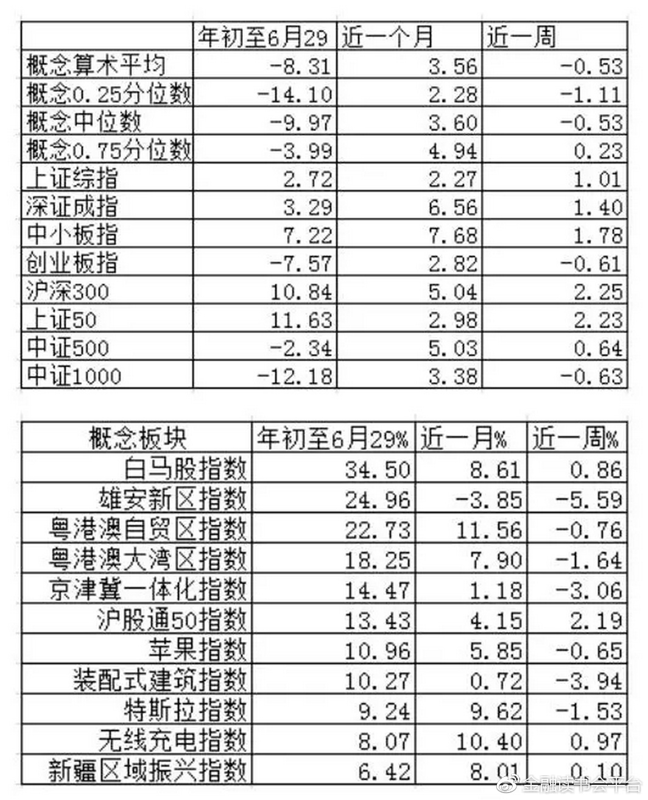图 18：指数与概念板块的收益统计
最后做一个提醒， 我称之为谨慎的 7 月， 即警惕资金面和监管压力二者共振对市场的压力。 一季度末银行面临 MPA 考核，为了缓解资金面压力，央行在三月下旬净投放了 3000 亿的货币， 3 月最后一周暂停操作，四月中旬才重启公开市场操作， 期间净回笼货币超 5000 亿。 市场本来预期 3 月份货币会比较紧张，但实际是 3 月份不紧而 4 月份发生了超预期的紧张。 与此同时， 四月份出台一系列监管新规，比如定增发行标准提高、 定增解禁期和新股解禁期的延长，对市场情绪造成打压。 资金面收紧与监管加强所导致的共振使得国债期货和股票的价格走势在四月份产生了整体的下行， 而紧资金面和严监管环境对小市值股票的压力更强烈（见图 19） 。 在二季度末可以看到央行做了类似的操作，在 6 月前三周净投放 4000 亿资金，其中中长期资金 600 多亿，更多的是 28 天的逆回购，第四周没有进行公开市场操作， 这些资金会在七月份大量回收，可能会造成市场的紧张， 提醒大家在七月份进行谨慎的操作。 现在 7 月过去了两周， 相比 3、4 月份， 我们注意到 6、 7 月份市场整体流动性要宽松一些，从资金量来看， 6、7 月份同业存单的发行量和价格在下降，上市银行的同业资产也在收缩， M2 下降到 10%以下， 从宏观层面上看金融去杠杆收到一定成效， GDP 保 6.5%应该没有问题， 这些都是监管所愿意看到的一些现象， 有可能在保持长期加强监管、金融进一步去杠杆的主基调下， 阶段性地控住监管的节奏。 7 月份的监管压力相比 4 月份会有所减轻，无论从资金量上还是监管压力上都会好于 3、 4 月份。 7月 11 日在央行连续 12 天没有向市场公开操作之后重启操作， 上证 50 和沪深 300当日分别上涨 0.81%和 0.48%， 中证 500 和中证 1000 则还是明显下跌，分别下跌1.25%和 1.23%， 市场在延续上半年的风格。
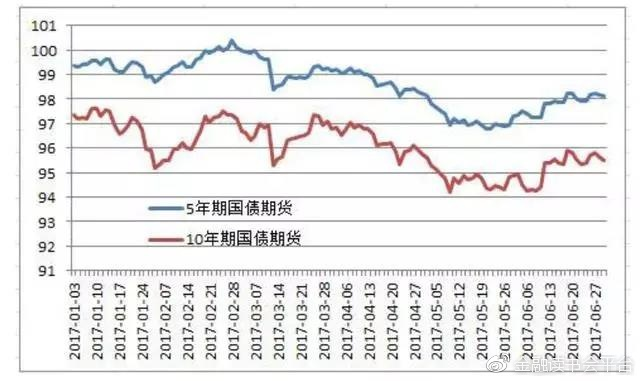
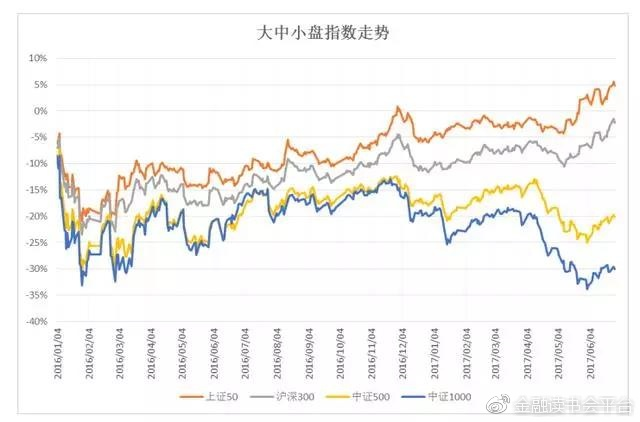图 19：国债期货与股票指数走势图
（完）
文章来源：本文节选自巴曙松教授发起的“连线华尔街”第117期内部会议纪要（本文仅代表作者观点，不代表任何机构的意见，不构成投资建议）
本篇编辑：彭淳懿
推荐阅读
- 最近，Naomi这个名字频频出现在微博热搜上，不过这个naomi和我们今天谈的Naomi并不是同一个人。 今年的维密秀在纽约悄无声息的举行了，收视率非常的差，总观众数只有327万人，创造了历史新低。 最近几年，维密秀已经是网红模特的天下，比如肯德基三姐妹：肯豆、贝拉和GIGI.对于她们而言，台步好不好不是最重要的，只要在社交网络上够红，那她们就不愁走不了秀场。 很多人开始怀念起曾经在鼎盛时期的维密秀，还有她们精彩的台步，比如这位甩流苏的黑人模特。 很多人想到Naomi，第一反应就是NaomiCampbell，这位全球最著名的模特，她业务能力强大，但脾气暴躁，也是多宗伤害案的施害者。
- 参考消息网12月10日报道（文/丁扬） 可能你已经注意到了：今天下午，加拿大驻华使馆的官方微博上发布了这样一段话： 在敏感而特殊的背景下，这条微博很快沦为"年度笑话"，更引来了众多中国网友的质疑和批评：中国公民的人权，你们尊重了吗？ 今天，距离媒体爆出加拿大警方拘捕华为首席财务官（CFO）孟晚舟事件，刚刚过去一周。 过去七天里，中加双方呈现的是截然不同的姿态：中方激烈声讨和表态的连番升级，以及加拿大方面的暧昧模糊和选择性沉默…… 然而就在种种不确定之中，有一个事实正在清晰起来，那就是作为直接"抓人"一方的加拿大，正一步步陷入尴尬境地。
- 12月6日曝出重磅消息，中国科技领军企业——华为CFO（首席财务官）孟晚舟于12月1日在加拿大转机时被美、加联手非法拘捕。这一事件非常重大，因为世人都知道，美国这次是醉翁之意不在酒，目标还是想借打击中国企业来打击中国整个高科技产业，核心目的是要维护其全球的科技霸权。可以毫不夸张地说，中美的较量不但没有停止，依然在进一步深化和延伸。与此同时，中美也在博弈中进行对话以寻求和解之道。 正在这个时间节点上，发生了孟晚舟被拘捕的事件，当然会引发广泛关注。对于这次事件，可以看得出大家的愤怒，不过，愤慨归愤慨，强硬归强硬，事情还是得归事情，处理起来要大智大勇而非蛮干，不能因冲动而陷入对手的圈套之中。
- 猫粮大致可分为干性、罐头、半生熟三种。干性食品，是含有必要营养的综合食品。 口味丰富，对牙齿的清洁保护也能起到一定作用，价格分为多种，天然粮的效果相对好些，且易于保存。所以，有条件的话就尽量以这种食物为主。猫咪的干粮旁边，一定要放上干净的饮用水;有些人认为猫咪不饮水，这是错误的。 半生熟的食品介于食品和罐头食品之间，适合老猫食用。 1.猫咪生长阶段吃的猫粮也是不同的。 幼猫是0-1岁，成猫是1-10岁，老龄猫10岁以上，幼猫粮要选粗蛋白在33%以上，成猫粮在25%以上就可以。